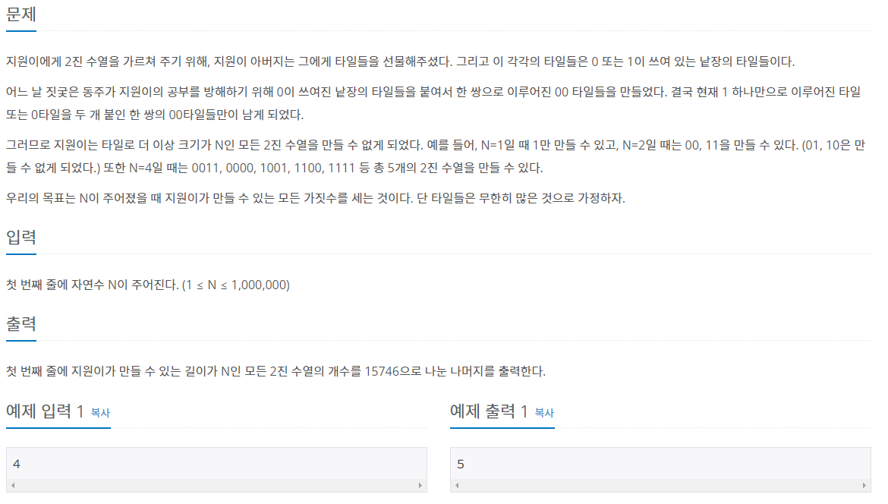
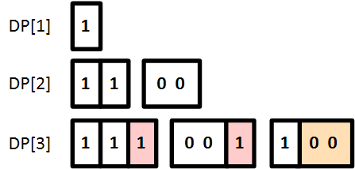

#INFO
난이도 : SILVER3
알고리즘 유형 : DP
출처 : 1904번: 01타일 (acmicpc.net)
1904번: 01타일
지원이에게 2진 수열을 가르쳐 주기 위해, 지원이 아버지는 그에게 타일들을 선물해주셨다. 그리고 이 각각의 타일들은 0 또는 1이 쓰여 있는 낱장의 타일들이다. 어느 날 짓궂은 동주가 지원이
www.acmicpc.net

#SOLVE
DP를 이용해 문제를 풀이하였습니다.
문제의 핵심은 타일의 마지막 수가 0으로 끝나는지 1로 끝나는지에 따라 케이스를 구분해 점화식을 세우는 것입니다.
마지막 수가 1로 끝나는 타일들은 DP[i-1] 값의 타일들에서 오른쪽에 1타일을 추가한 것이고, 마지막 수가 0으로 끝나는 타일들은 DP[i-2] 값의 타일들에서 오른쪽에 00타일을 추가한 것 입니다.
따라서 다음과 같이 점화식을 세우면 됩니다.
//init
dp[1] = 1;
dp[2] = 2;
//solve
int n;
cin >> n;
for (int i = 3 ; i <= n ; i++) {
dp[i] = (dp[i-2] + dp[i-1]) % 15746;
}
#CODE
#include <iostream>
using namespace std;
int main(){
//init
long long dp[1000001];
dp[1] = 1;
dp[2] = 2;
//solve
int n;
cin >> n;
for (int i = 3 ; i <= n ; i++) {
dp[i] = (dp[i-2] + dp[i-1]) % 15746;
}
cout << dp[n];
return 0;
}